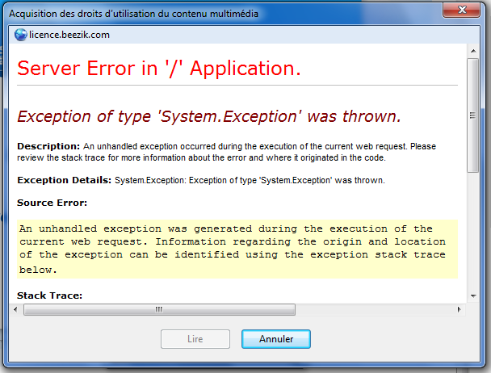

10 juin 2009
Beezik ou la musique pour les pauvres

Je choisis Samsung et le navigateur passe en mode plein écran en diffusant la publicité pour le dernier téléphone de la marque. Je quitte le mode plein écran mais on m'indique que je doit visualiser le clip en entier afin de pouvoir accéder au téléchargement.
On m'indique aussi : "Attention : Pour écouter et transférer vos titres vers un baladeur utilisez le lecteur Windows Media" Utilisateur Linux et Mac passez votre chemin.
La barre de chargement se termine et on me redirige vers cette page :

Et oui l'internaute doit être rapide ! Bref je clique et je peut enfin récupérer ma chanson qui est au format .wma
Le fichier est donc encodé en Windows Media, un format propriétaire. Le débit est plutôt bas 192kbps (7Digital me propose 320kbps), mais détail plus important : le fichier est protégé avec des DRM !!!
Je double-clique sur le fichier, le chargement est plutôt long sur Windows Media Player 12 et j'ai finalement droit à un message d'erreur :

Deuxième essai : On me demande de renouveler ma licence et ça fonctionne, la musique se lit.
Le site m'annonce que je peut lire la musique avec "mon baladeur MP3". Je sors donc mon Meizu M3 et je test la synchronisation avec Windows Media Player... encore une erreur ! Bref j'essaie de copier directement le fichier via l'explorateur. Le morceau se lit sur mon baladeur ce qui est plutôt une bonne surprise !
Bref vous l'aurez compris la procédure est plutôt fastidieuse et le résultat attendu est plutôt moyen, à savoir un fichier protégé et une lecture limitée aux appareils compatibles.
Les DRM ont pourtant été largement abandonnés par tout les sites de vente de musique à savoir Apple, 7Digital... Quant au format propriétaire il est encore rare de voir des sites qui proposent des morceaux en Ogg ou en Flac .
Ce site propose une solution gratuite alors qu'il existe des alternatives beaucoup plus intéressantes comme Spotify qui permet d'écouter la musique en streaming via un logiciel gratuit compatible Windows/Mac/Linux, de partager ses listes de lecture etc...
Conclusion : Ce site est pratique pour récupérer quelques morceaux à écouter sur son baladeur mais l'est beaucoup moins pour écouter un album entier.
Points positifs : - Gratuit - Inscription plutôt rapide Points négatifs : - Fichiers protégés avec DRM - Format propriétaire - Site assez lent - Qualité moyenne
Commentaires 2